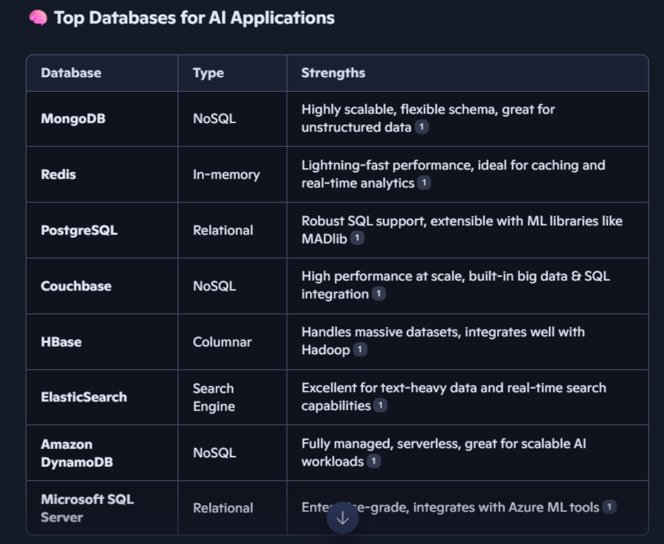
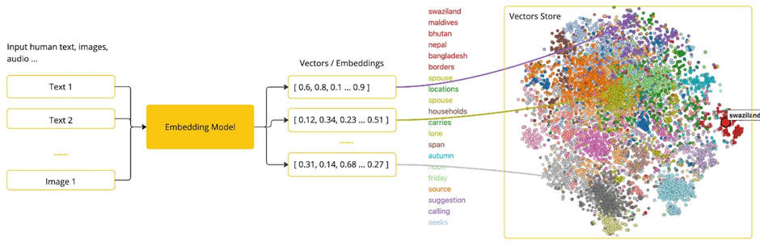

Mongo DB and AI Integration
Everywhere, it is AI that is in the news, and of course, we all want to use it. So, I was wondering what would be the best database for AI applications, and when I asked the same question to Copilot, it gave me this list:

MongoDB seems to be on top, but of course, we need to consider our current architecture and data. If it’s relational, we can go ahead with PostgreSQL or any other available relational database. Today, I will talk about MongoDB, which is a NoSQL database.
This week I got the opportunity to attend one of the sessions organized by MongoDB, where I not only learned about this database but also about many other things related to AI and LLMs.
Unlike traditional relational databases that store data in tables, MongoDB uses a document-oriented model, where data is stored in flexible, JSON-like structures called BSON (Binary JSON). Its structure for storing data is completely different, as we don’t see anything like a fixed schema.
In MongoDB, the top level is the database, but instead of tables, we create something called collections, which are like folders that can hold multiple documents of different structures.
A document is a single record in MongoDB, stored in BSON format. For example:
{
"name": "John Doe",
"email": "john@example.com",
"age": 28
}
Just like in JSON, we see key-value pairs in different fields, which are called “fields” within a document. Finally, since AI requires speed, searching needs to be efficient. For that, we use indexes—special data structures that can be applied to any key of a field. Indexing helps quickly locate documents without scanning the entire collection.
After understanding the basics of databases, we moved ahead into AI keywords, which form the foundation of LLMs.
The first keyword is Prompt. A prompt might seem like just the text entered into a dialog box that is sent to the API. However, it encompasses much more than that. In many AI models, the text for a prompt is not just a simple string. Carefully crafted prompts are essential to get the best possible output.
The next important concept is Embeddings.
Embeddings are numerical representations of text, images, or videos that capture relationships between inputs. They work by converting text, images, or videos into arrays of floating-point numbers, called vectors. These vectors are designed to capture the meaning of the input. The length of the embedding array is called the vector’s dimensionality.

Following embeddings, we have Tokens, which are limited—even if we pay for them—so they need to be used wisely. On input, models convert words into tokens. On output, they convert tokens back into words. In English, one token roughly corresponds to 75% of a word. For reference, Shakespeare’s complete works, totalling around 900,000 words, translate to approximately 1.2 million tokens.
Our final keyword is RAG (Retrieval-Augmented Generation), which is closely tied to accuracy. Isn’t it amazing that even after responding so quickly, AI is still highly accurate? The reason behind this is RAG. It addresses the challenge of incorporating relevant data into prompts for accurate AI model responses. RAG works by reading unstructured data from documents, transforming it, and then writing it into a vector database. At a high level, this is an ETL (Extract, Transform, Load) pipeline. The vector database is then used in the retrieval part of the RAG technique.
Summary:
This article discusses the role of databases in AI applications, focusing on MongoDB’s document-oriented model compared to traditional relational databases. It explains MongoDB’s key concepts such as documents, collections, and indexing, followed by an introduction to essential AI and LLM concepts: prompts, embeddings, tokens, and retrieval-augmented generation (RAG). Together, these elements highlight how modern databases and AI techniques work hand-in-hand to enable powerful, efficient, and accurate applications.